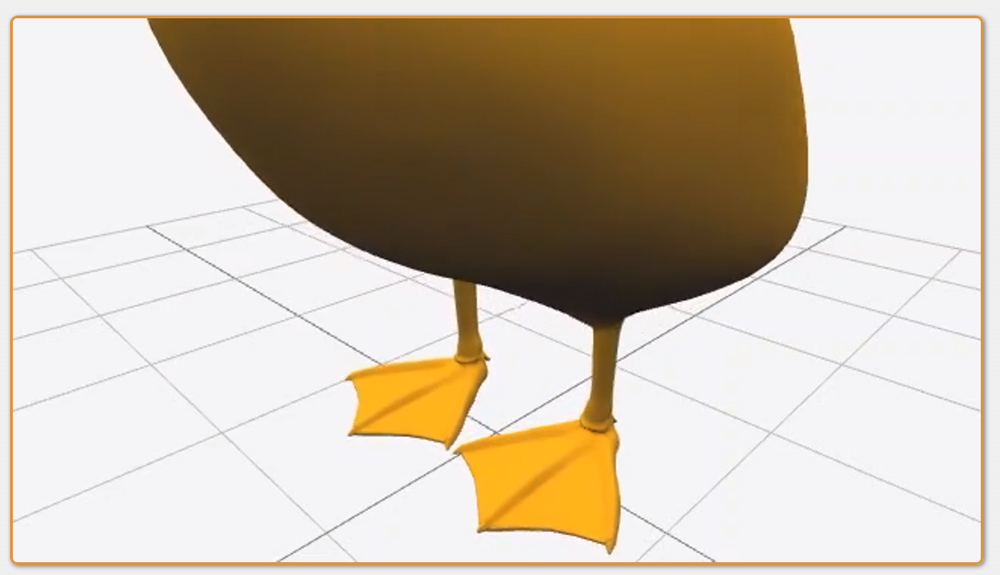

转载出处：https://www.daniel-holden.com/page/scalar-velocity
Scalar Velocity
Created on May 4, 2022, 9:34 p.m.
In a previous post I explained what the angular velocity is, how to compute it, and how it relates to the angle-axis representation of rotations, as well as the so called exponential map.
Today I want to talk about something different, but similar: scale - as in the scale of objects we might place in a 3D world. And with that I have a question for you: what does velocity mean when it comes to scale. What is scalar velocity?
More specifically - if we have an object with a scale that is changing over time, how can we represent that rate of change, how can we compute it, and how can we interpret it?
Well one simple thing we could try is to just take the difference between two scale values at different times, and then divide that difference by the dt:
float scale_differentiate_velocity_naive(float next, float curr, float dt)
{
return (next - curr) / dt;
}
Then, if we wanted to scale an object from, say, a scale of 0.1 to a scale of 10, over a period of 3 seconds, the velocity would be given by (10 - 0.1) / 3, and we would add fixed increments of this velocity, multiplied by the dt, onto the scale value of the object at each frame.
float scalar_velocity = scale_differentiate_velocity_naive(10.0f, 0.1f, 3.0f);
...
// Each Frame
scale = scale + dt * scalar_velocity;
But if we do this the growth appears fast at the beginning, but slows down as the object gets larger:

The reason this doesn't really work is because, scales, just like rotations, naturally compose using multiplication, rather than addition.
In fact we can see this, if we instead multiply the scale by some fixed rate each frame.
// Each Frame
scale = 1.025 * scale;
Doing things this way we get the visually continuous growth we'd expect:
🔎 https://www.daniel-holden.com/media/uploads/DuckScaleUniform.m4v
And this already gives us a bit more intuition for what a scalar velocity should be - not a number we add each frame, but more like a ratio - a value which we multiply our scale values by each frame.
But we're not quite there yet, because it still isn't clear how the dt is involved in all of this.
One way to get closer to the correct answer is to think about the equivalent situation for rotations. Just as with scale, if we want to rotate an object by a fixed amount each frame, we multiply it by some fixed rotation, which we can call the delta:
// Each Frame
rotation = quat_mul(delta, rotation);
But the delta itself isn't the angular velocity. If you recall from my previous article, the delta is what we get if we take the angular velocity, multiply it by the dt, and convert it back from the scaled-angle-axis representation into a quaternion:
quat delta = quat_from_scaled_angle_axis(angular_velocity * dt);
And because scales, just like rotations, compose with multiplication, to get our scalar velocity we need to follow this same pattern.
We need to start with the scalar velocity, multiply by the dt, and put it through the exp function (the equivalent to our from_scaled_angle_axis function in this case):
float delta = expf(scalar_velocity * dt);
Which can be written as an integration function as follows:
float scale_integrate_velocity_natural(float vel, float curr, float dt)
{
return expf(vel * dt) * curr;
}
To compute the scalar velocity we therefore do the inverse - we divide one scale value by the other, put the result through the log function, and divide it by the dt.
float scale_differentiate_velocity_natural(float next, float curr, float dt)
{
return logf(next / curr) / dt;
}
If we're a bit more explicit about inverting and multiplying scales, notice how closely this resembles the quaternion versions of these functions:
float scale_inv(float s)
{
return 1.0f / s;
}
float scale_mul(float s, float t)
{
return s * t;
}
vec3 quat_differentiate_angular_velocity(quat next, quat curr, float dt)
{
return quat_to_scaled_angle_axis(quat_abs(
quat_mul(next, quat_inv(curr)))) / dt;
}
float scale_differentiate_velocity_natural(float next, float curr, float dt)
{
return logf(
scale_mul(next, scale_inv(curr))) / dt;
}
quat quat_integrate_angular_velocity(vec3 vel, quat curr, float dt)
{
return quat_mul(quat_from_scaled_angle_axis(vel * dt), curr);
}
float scale_integrate_velocity_natural(float vel, float curr, float dt)
{
return scale_mul(expf(vel * dt), curr);
}
So the scalar velocity is the log of the ratio of two scales, divided by the dt.
Log Base
In these examples we've been using the natural log, but we can actually use any base we want, and changing the base of the log will change how we interpret the scalar velocity.
For example, if we use the natural log as in the above examples, then \(log\frac{1}{1}\) will correspond to a scalar velocity of 0, \(log\frac{e}{1}\) will correspond to a scalar velocity of 1, and \(log\frac{1}{e}\) will correspond to a scalar velocity of −1.
If we use \(log_2\) on the other hand, we get the following: \(log_2\frac{1}{1}=0\), \(log_2\frac{2}{1}=1\), \(log_2\frac{1}{2}=-1\) .
float scale_differentiate_velocity(float curr, float prev, float dt)
{
return log2f(curr / prev) / dt;
}
float scale_integrate_velocity(float vel, float curr, float dt)
{
return exp2f(vel * dt) * curr;
}
(Note: We can still use the natural log and exp functions to compute things in base 2, so long as we multiply or divide the result by log(2)=0.6931471805599453.)
#define LN2f 0.6931471805599453f
float scale_differentiate_velocity_alt(float curr, float prev, float dt)
{
return (logf(curr / prev) / LN2f) / dt;
}
float scale_integrate_velocity_alt(float vel, float curr, float dt)
{
return expf(LN2f * vel * dt) * curr;
}
When we use a base of 2 our scalar velocity gains an interpretable meaning: it represents the number of times an object will double in size every second (or halve in size for negative values). So an object with a scalar velocity of 3 is an object which will be eight times larger after one second.
And weird as it may sound, the scalar velocity (in base 2) is exactly this: the rate of doubling per second.
The Doublelife
The extremely keen eye'd of you might have noticed something a bit like this before in one of my articles. Take a look at this slightly re-arrange version of the damper_exact function from my springs article.
float damper_exact(float x, float g, float halflife, float dt)
{
return lerp(x, g, 1.0f - expf(-LN2f * (1.0f / halflife) * dt));
}
Here, when we made our exact damper use a halflife, we ended up taking 1.0f / halflife, multiplying it by a dt, converting to base 2 by multiplying by LN2f, negating it, and putting it through the exp function. That's a remarkably similar process to our scale_integrate_velocity function!
float scale_integrate_velocity_alt(float vel, float curr, float dt)
{
return expf(LN2f * vel * dt) * curr;
}
By comparing the two we can see that -1.0f / halflife is kind of like the scalar velocity in this case. This gives us another intuitive way to interpret our scalar velocities. One over a negative (base 2) scalar velocity is a halflife!
Which means that one over a positive (base 2) scalar velocity is a... doublelife?
Lerp and Eerp
When we interpolate two positions we can use lerp, and with two rotations we can use slerp, but what about for scales?
A function you might have seen is eerp, which is a version of lerp that uses multiplication, division, and power, instead of addition, subtraction, and multiplication:
float lerpf(float x, float y, float a)
{
return x * (1.0f - a) + y * a;
}
float eerpf(float x, float y, float a)
{
return powf(x, (1.0f - a)) * powf(y, a);
}
float lerpf_alt(float x, float y, float a)
{
return x + (y - x) * a;
}
float eerpf_alt(float x, float y, float a)
{
return x * powf(y / x, a);
}
If we think about our previous intuition for dealing with scales - namely that scales (just like rotations) compose using multiplication rather than addition - then using this function for scales totally makes sense.
And converting all + to *, - to /, and * to pow is one way to do it, but another interesting way to do it is to convert these scale values into what resembles scalar velocities - to put them through log, use lerp, and then put the result back through exp:
float eerpf_alt2(float x, float y, float a)
{
return expf(lerpf(logf(x), logf(y), a));
}
The reason this works is that it's algebraically identical to the previous formulation. Which we can see if we remember a few of our logarithm identities from school and do a little bit of algebra:
\begin{align*} \text{eerp}(x,y,a)&=\text{exp}(\text{lerp}(\text{log}(x),\text{log}(y),a))\\ \text{eerp}(x,y,a)&=\text{exp}(\text{log}(x)+(\text{log}(y)−\text{log}(x))×a)\\ \text{eerp}(x,y,a)&=\text{exp}(\text{log}(x))\times \text{exp}((\text{log}(y)−\text{log}(x))×a)\\ \text{eerp}(x,y,a)&=x\times \text{exp}((\text{log}(y)−\text{log}(x))\times a)\\ \text{eerp}(x,y,a)&=x\times \text{exp}((\text{log}(y)−\text{log}(x)))^a\\ \text{eerp}(x,y,a)&=x\times (\frac{\text{exp}(\text{log}(y))}{\text{exp}(\text{log}(x))} )^a\\ \text{eerp}(x,y,a)&=x\times (\frac{y}{x} )^a \end{align*}
Personally I think this is a cool example of the fundamental (but still mind-boggling to me) fact about logarithms: that adding and subtracting with logarithms, is the same as multiplying and dividing normally!
🔎 https://www.daniel-holden.com/media/uploads/DuckScaleSlider.m4v
Scale Springs
In my previous article on springs I provided a little bit of example code for how we might make a quaternion spring:
void simple_spring_damper_exact_quat(
quat& x,
vec3& v,
quat x_goal,
float halflife,
float dt)
{
float y = halflife_to_damping(halflife) / 2.0f;
vec3 j0 = quat_to_scaled_angle_axis(quat_mul(x, quat_inv(x_goal)));
vec3 j1 = v + j0*y;
float eydt = fast_negexp(y*dt);
x = quat_mul(quat_from_scaled_angle_axis(eydt*(j0 + j1*dt)), x_goal);
v = eydt*(v - j1*y*dt);
}
In formulating this quaterion spring we faced the same basic problem that we have with scales - that we needed to convert our quaternions (which normally require multiplication) into something we can add, subtract, and scale as if they were normal vectors, to allow them to be used in the spring equations.
Scales are no different, and the formulation of a scale spring looks remarkably similar to the quaternion one:
void simple_spring_damper_exact_scale(
float& x,
float& v,
float x_goal,
float halflife,
float dt)
{
float y = halflife_to_damping(halflife) / 2.0f;
float j0 = log2f(x / x_goal);
float j1 = v + j0*y;
float eydt = fast_negexp(y*dt);
x = exp2f(eydt*(j0 + j1*dt)) * x_goal;
v = eydt*(v - j1*y*dt);
}
But it isn't just lerp and springs which can make use of this transformation.
Using log2 and exp2 for scales can be useful in all kinds of different situations where we are trying to adapt equations which assume the object is some kind of vector which can be added and subtracted. For example, almost all of linear algebra and machine learning!
🔎 https://www.daniel-holden.com/media/uploads/DuckSpring.m4v
Conclusion
Just like angular velocities, scalar velocities are not immediately intuitive. But that doesn't mean they are magical numbers which can't be understood, and knowing a little bit about them can give us great intuitions for how to deal with them in a whole host of different situations. Happy scaling!
本文出自CaterpillarStudyGroup，转载请注明出处。
https://caterpillarstudygroup.github.io/ImportantArticles/